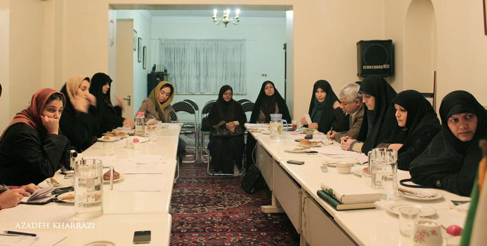

پذيرش > اخبار > لایحه جدید گذرنامه، قانونی برای کاهش امنیت روانی زنان


 لایحه جدید گذرنامه، قانونی برای کاهش امنیت روانی زنان لایحه جدید گذرنامه، قانونی برای کاهش امنیت روانی زنان
29 آذر 1391 - - نسخه قابل چاپ
تا قانون خانواده برابر: اعضای احزاب زنان اصولگرا و ائتلاف اسلامی زنان دوشنبه 27 آذر ماه نشستی در اعتراض به لایحه جدید گذرنامه برگذار کردند و در مورد تبعات تصویب چنین لایحهای به اظهارنظر پرداختند.

علی اسلامپناه، استاد دانشگاه تهران و نماینده مجلس شورای اسلامی در دور هشتم، بدرالسادات میرموسوی از حزب اعتماد ملی، توران ولیمراد فعال حوزه زنان، اعظم حاجیعباسی، دبیرکل جامعه زینب (س)، فاطمه راکعی، دبیرکل جمعیت زنان مسلمان نواندیش، شهیندخت مولاوردی مسئول کمیته حقوقی ائتلاف اسلامی زنان، طاهره رحیمی دبیرکل جامعه فاطمیون، فاطمه ایلشایی دبیر احزاب زنان اصولگرا، شهناز سجادی وکیل دادگستری، مرضیه قاسمپور، عضو کمیته حقوقی ائتلاف اسلامی زنان و اشرف گرامیزادگان، کارشناس حقوق در این نشست حضور داشتند.
فاطمه بداغی، معاون حقوقی رییسجمهور و اعضای فراکسیون زنان مجلس شورای اسلامی از جمله فاطمه رهبر برای برگزاری مناظره به این نشست دعوت شده بودند اما در جلسه شرکت نکردند.
در حقوق ما اصل، عدم ولایت افراد به یکدیگر است
علی اسلامپناه استاد حقوق دانشگاه تهران در این نشست گفت: توجیه اینکه وقتی دختران ما میخواهند از کشور خارج شوند باید اجازه ولی، قیم و یا حاکم شرع را کسب کنند، از نظر حقوقی ایراداتی دارد چنانچه باید گفت قانون اساسی برای حقوق انسانی بین مرد و زن هیچ تفاوتی قائل نشده است و همه افراد ملت اعم از زن و مرد در حمایت از قانون یکسان هستند.
این نماینده سابق با تاکید بر اینکه تبعیض ناروا میان حقوق زن و مرد خلاف قانون اساسی است، اظهار کرد: از نظر حقوق مدنی، زن به مجرد رسیدن به سن بلوغ از حجر خارج میشود و در هیچ کجایی نداریم که او بعد از رسیدن به سن بلوغ به حجرش برگردد.
اسلامپناه با بیان اینکه در حقوق ما اصل عدم ولایت افراد به یکدیگر است مگر در جاهایی که قانون صراحتا ولایت کسی را بر کسی ثابت دانسته باشد، خاطرنشان کرد: ولایت پدر بعد از رسیدن به سن بلوغ از فرد ساقط میشود مگر در مورد اموالش که این ولایت باقی میماند. البته یک استثناء وجود دارد و آن اینکه دختری که برای اولینبار میخواهد ازدواج کند، باید اجازه پدر یا جد پدری را کسب کند و حتی اگر پدر برخلاف مصلحت او عمل کرده باشد آن دختر میتواند در دادگاه این موضوع را ثابت کند و در زمان ثابت شدن این موضوع نیازی به اجازه پدر نیست.
این استاد حقوق دانشگاه تهران افزود: اینکه گفته میشود این بحث مطرح شده تا از وجود مفسده در خارج از کشور جلوگیری شود، خود ترویج فساد است و ما چنین حکمی را برای همه دختران بار کردهایم با این وجود مجامع بینالمللی چطور به ما نگاه خواهند کرد؟
او با مورد توجه قرار دادن بحث خروج دختران از کشور بعد از سن ۴۰ سال اظهار کرد: با لحاظ چنین بحثی اول از همه باید حکم عمومی عدم رشد برای دختران زیر ۴۰ سال صادر کنیم و دادستان هم قیم همه این افراد شود و آن وقت این دختران بخواهند از دادستان برای خروج از کشور اجازه بگیرند.
اسلامپناه با تاکید دوباره بر اینکه اطلاق ولایت و قیمومیت، اطلاق غیرحقوقی است، گفت: این حکم خلاف منطق، شرع و قانون است و کسانی که چنین قوانینی را وضع میکنند باید از عبارات حقوقی و نه عبارات غیرتخصصی استفاده کنند.

دولتمردان، والدین و فرزندان را به جان هم می اندازند!
در ادامه این نشست اشرف گرامیزادگان کارشناس حقوق با تاکید بر اینکه تدوینکنندگان لوایح حقوقی برای زنان متخصص نیستند و نظر شخصی خود را اعلام میکنند، افزود: متاسفانه دولتمردان و تدوینکنندگان لوایح و قوانین ما متوجه حریم خصوصی انسانها نیستند و سعی میکنند تا والدین و فرزندانشان را به جان هم بیندازند.
او اظهار کرد که طرح چنین مباحثی کرامت زنان را خدشهدار میکند و ما دوباره به عصری برمیگردیم که زن را به خاطر استفادههای خاص از او مورد توجه قرار میدادند.
قانونی برای کاهش امنیت روانی زنان
همچنین مرضیه قاسم پور عضو کمیته حقوقی ائتلاف اسلامی زنان اظهار کرد: باید در ابتدا این سوال را مطرح کرد که چطور شده که در چند سال اخیر دولت این قدر در حوزه مسائل زنان مداخله میکند و چرا به جای پرداختن به کاهش سن روسپیگری، اعتیاد و فقر سراغ این موضوعات می رود.
او ادامه داد: به عنوان یک حقوقدان احساس میکنم که امنیت حقوقی به شدت کاهش پیدا کرده است و زنان کاربران لوایحی شدهاند که حاصل نظرات شخصی افراد هستند. بحث کنترل قاچاق انسان و سلامت ورود و خروج زنان را از جمله علتهای طرح چنین لایحهای دانستند اما این در حالی است که در این قوانین طرز تفکرات سیاسی دیده میشود.
قاسم پور بیان کرد: مگر قانون نباید گرهای از کار فرو بسته زنان باز کند؟ اما این قوانین امنیت روانی زنان را از بین میبرد.
او اظهار کرد: در دنیایی که قوانین غنی حقوقی وجود دارد و نهادهای بالادستی به بررسی لوایح میپردازند و آثار مترتب بر آن لوایح را ارزیابی میکند و این موضوع را مورد توجه قرار میدهند و به دنبال این هستند که ببینند عکسالعمل جامعه هدف در طرح یک لایحه چیست چرا در کشور ما باید چنین لوایحی با تبعات خاصی که دارد مدنظر قرار بگیرد. قاسم پور همچنین ابراز کرد: ما به سمت و سوی توسعه قوانین پدرسالارانه در کشورمان حرکت میکنیم.
قوانین قیم مابانه و ضد زن حاکم شده اند
فاطمه راکعی دبیرکل جمعیت زنان مسلمان نواندیش نیز در این نشست گفت: فرض را بر این بگیریم که یک عده قابل ملاحظهای از زنان ما خدای نکرده دچار فساد و یا قاچاق میشوند، آیا زنی که تا سن ۴۰ سالگی آن قدر درایت، شعور، وجدان و آگاهی ندارد که از خود، عفت و شرف زنانهاش در هر کجای دنیا که باشد پاسداری کند بهتر نیست که جلویش گرفته نشود و بگذارند او به خارج از کشور رود؟
او با بیان این که آیا روش درست، جلوگیری از خروج این افراد از کشور است یا نه؟ افزود: متاسفانه در حال حاضر با مسائل مربوط به زنان وارونه و غیرکارشناسی برخورد میشود. راکعی گفت چطور میخواهند بحث رشیده و غیررشیده بودن یک زن را تشخیص دهند، مگر اینکه نهادی را تاسیس کنند و بگویند این نهاد، نهاد تشخیص رشیده از غیر رشیده است.
دبیرکل جمعیت زنان مسلمان نواندیش با بیان اینکه ازدواجهای صوری از تبعات تصویب چنین قانونی است، اظهار کرد: قوانین ضدزن و حقیر شمارنده زن و نگاه مردسالارانه و قیممآبانه سنتی بر جریانات چند سال اخیر و دولت حاکم شده است و در این قانون به طور صریح و روشن خود را نشان میدهد.
راکعی، اظهار کرد: ما فکر میکردیم با ظهور انقلاب اسلامی و تاکیدات حضرت امام نسبت به جایگاه والای زنان در اسلام شاهد چنین مباحثی نباشیم در حالی که امروز هم آگاهی و پیشرفتهای علمی زنان غیرقابل انکار است و باید تحولی صورت میگرفت اما در همین جامعه مباحث اینچنین مطرح میشود که بسیار تاسفبرانگیز است.
گذرنامه حق زن است
حاجیعباسی دبیرکل جامعه زینب نیز با تاکید بر اینکه گذرنامه هم مثل شناسنامه یک مدرک شناسایی است و کسی اجازه ندارد چنین حقی را از یک زن بگیرد و برای او محدودیت ایجاد کند، به سخنان آیت الله خمینی در خصوص جایگاه زن اشاره و اظهار کرد: امام فرمودند که «در موضوع آزادی زن برای مردم شبهه ایجاد کردهاند که اسلام آمده زن را خانهنشین کند. ما چرا باید با درس خواندن زن مخالف باشیم؟ چرا با کار کردن زن مخالف باشیم؟ و چرا زن نتواند کارهای دولتی انجام دهد؟ چرا با مسافرت کردن زن مخالفت کنیم؟ زن همچون مرد در تمام اینها آزاد است و با مرد فرقی ندارد و احترام و آزادی که اسلام به زن داده است به هیچ قانون و مکتبی نداده است».
زن و مرد به لحاظ هویت و جوهره انسانی یکی هستند
توران ولیمراد عضو جامعه زینب و از فعالان حقوق زنان نیز با بیان اینکه به لحاظ هویت و جوهره انسانی، زن و مرد یکی هستند، گفت: در نگاه فمینیستی و غربی زن با مرد برابر است اما در اسلام حتی کلمه برابر نیامده و از واژه نفس واحده استفاده شده است و در واقع با این وجود هیچ تفاوتی بین زن و مرد در اسلام دیده نشده است.
او با بیان اینکه قرآن ما به لحاظ حضور و هویت فردی و اجتماعی به زنان امتیاز میدهد، تاکید کرد: آیا جامعه ما با تمرین عقل و خردورزی اسلامی میشود یا اینکه بخواهیم در آن عدهای را سفیه، صغیر و نادان بدانیم.
ولیمراد با بیان اینکه متاسفانه مظلومترین قشر در جامعه ما زنان هستند، از این موضوع که زنان در کشور ما وسیله و روشی برای تمرین کردن لوایح و قوانین هستند ابراز تاسف کرد و گفت: زنان حاضر در مجلس باید به غیر از انجام وظیفه نمایندگی خود، مطالبات زنان را هم پیگیری کنند نه اینکه خودشان علیه حقوق زنان قدم بردارند.
عضو جامعه زینب با بیان اینکه اسلام با هرگونه نگرش جنسیتی به زن مخالف است، گفت: تاسفها به خاطر طرح چنین قوانینی به این دلیل است که این نوع نگاهها به زن ضداسلامی و نه حتی غیراسلامی است چرا که تصویری که این گونه از اسلام به ذهن میآید باعث زده شدن افراد از اسلام میشود و در ارتباطات بینالمللی نیز به جایگاه ما خدشه وارد خواهد کرد.
او خاطرنشان کرد: درست است که پیشنهادهای مختلفی به یک کمیسیون داده میشود اما مهم این است که در این کمیسیونها و کمیتههای مربوطه کسانی به کار کارشناسی بپردازند که بالاترین رتبههای علمی را داشته باشند. این در حالی است که وقتی چنین قوانینی مدنظر قرار میگیرد باید گفت کسانی که چنین فکرهایی در سرشان است چقدر با این جامعه فاصله دارند.
ولی مراد افزود: صداهای رسمی که از دولت و مجلس در میآید همواره به دنبال وصله کردن هستند اما این در حالی است که نباید اصلا چنین لوایح و نظراتی بسط و نشر پیدا کند. او همچنین تاکید کرد که زنان همواره در ظهور و تثبیت انقلاب اسلامی تاثیر بسزایی داشتهاند و مطرحکنندگان چنین قوانینی باید بدانند که ما کنار ننشستهایم و اجازه نمیدهیم چنین لوایحی تصویب شود.
ولی مراد ادامه داد: زن عقل دارد پس مسئول کارهای خودش است. یکی از نمونههای کارهای اجتماعی او در رای دادن مصداق پیدا میکند اما با تصویب چنین قوانینی، کلیه فعالیتهای او که با انتخاب درست از نادرست تعریف میشود زیر سوال میرود. دختران و زنان ما در تشکیل نظام و کلیه پایههای نظام نقش دارند. اگر عقلشان زیر سوال برود و گفته شود آنها رشیده نیستند پس اهمیت به نقش آنها منتفی میشود.

دسترسی نداشتن به حقوق ظلم است
در این نشست همچنین فاطمه ایلشاهی، دبیرکل جمعیت اسلامی حضرت زهرا و دبیر احزاب زنان اصولگرا نیز ضمن اینکه صدور گذرنامه برای خروج زنان تا ۴۰ سال را یک نگاه غیراسلامی و ظالمانه دانست و گفت: یکی از مصداقهای ظلم این است که انسان به حقوق خود دسترسی نداشته باشد.
لایحه جدید نسبت به زنان توهین آمیز است
شهناز سجادی، وکیل دادگستری نیز با تاکید بر اینکه محرومیت از حق مخالف قانون اساسی است، گفت: چطور است که یک دختر ۹ ساله به موجب قانون مدنی که مبتنی بر شرع است میتواند خودش جدا زندگی کند و قانون برای یک دختر ۹ ساله چنین حقی قائل شده اما زنان تا ۴۰ سال باید برای خروج از کشور از پدرشان کسب اجازه کنند.
او اضافه کرد: ۹ سال سن مسئولیت کیفری است و اگر یک دختر ۹ ساله مرتکب جنایتی شود قصاص خواهد شد حال باید گفت اگر میخواهند حقی از زنان بگیرند در سن کیفری هم تجدیدنظر کنند.
سجادی با اشاره به طرح دلایلی برای مورد توجه قرار دادن این لایحه از سوی مجلس مثل اینکه سلامت زنان در نظر گرفته شده است، اظهار کرد: شما که چنین مواردی را مطرح میکنید کافی است که در شبهای تهران به خیابانها بروید و ببینید که زنانی هستند که بدون مزاحمت نیروی انتظامی جولان میدهند حال شما به جای اینکه دغدغه چنین زنانی را داشته باشید به این مسائل میپردازید، اصلا مگر چند درصد از خانمهای ما که به خارج میروند مفسده ایجاد میکنند. طرح چنین مباحثی زشت و توهینآمیز است.
ایران عربستانی دیگر؟
مولاوردی دبیر کمیته حقوقی ائتلاف اسلامی زنان نیز با بیان اینکه ما به جای رفع نابرابریها همواره شاهد افزایش تبعیضات جنسیتی در کشور هستیم در مورد اظهارنظر سجادی معاون امور خانواده مرکز امور زنان و خانواده ریاست جمهوری که گفته بود دختران بعد از ۴۰ سالگی عاقل میشوند، بیان کرد: باید پرسید که به استناد کدام دادههای آماری و پژوهش و تحقیقات این حکم داده شده است، اگر عقل را از زنان بگیریم چه میماند. عدهای در حال حاضر به دنبال حذف عقل از زنان هستند.
او با تاکید بر این که ابتداییترین حق انسانی بر اساس اعلامیه حقوق بشر، ورود و خروج از کشور است، ادامه داد: انگار دولتها یا حکومتها حقوق انسانی را یک هدیه میدانند و فکر میکنند که باید به میل خودشان این هدیه را به انسانها اعطا کنند و آن را پس بگیرند.
مولاوردی با طرح این سوال که ما در حال ارائه چه الگو و پیامی برای زنان و دختران خود هستیم، گفت: تبعات روانی و از دست دادن اعتماد به نفس و احساس حقارت برای دختران با طرح چنین مباحثی به این قشر از جامعه ما تلقین میشود.
دبیر کمیته حقوقی ائتلاف اسلامی زنان همچنین این پرسش را مطرح کرد که «آیا ما به دنبال عربستانی شدن زنان ایران هستیم؟»
برای حفظ خانواده هم زن و هم شوهر باید رضایت هم را کسب کنند
طاهره رحیمی، دبیرکل جامعه فاطمیون نیز گفت: هیچ کس حق دخالت در زندگی خصوصی مردم را ندارد. اگر زن نیازمند اجازه شوهر است باید گفت که برای حفظ خانواده هم زن و هم شوهر باید رضایت هم را کسب کنند.
استثنا نباید مبنای قانون گذاری شود
قائنی، عضو هیات موسس جمعیت زنان مسلمان نیز با بیان اینکه اگر قوانین بخواهد از یک پشتوانه محکم برخوردار باشد باید بر مبنای مسائل عقلی و شرعی باشد، گفت: قوانینی که با شریعت و عقلانیت انسانها سازگار نیست روح قانونگریزی را در مردم تقویت کرده و از نظر روحی و روانی آنچنان اثر تخریبی ایجاد میکند که خودش چند برابر بدتر از نبودن آن قانون است.
وی در پایان این نشست افزود: مگر انسانها آزاد نیستند تا برای زندگی خود برنامهریزی کنند. چرا باید قوانینی وضع شود که مردم نتوانند از آزادیهای مشروعشان استفاده کنند؟ حال ممکن است کسی هم در خارج از کشور مفسده ایجاد کند اولا این موضوع به ندرت ایجاد میشود و دوم اینکه این موضوع نباید مبنای قانونگذاری ما قرار بگیرد.
ارسال به
بالاترین
،
توییتر
،
فریندفید
،
فیسبوک
در همين بخش :
 پروین ذبیحی برنده جایزه حقوق بشری سازمان غيردولتى اتريشى سودويند شد پروین ذبیحی برنده جایزه حقوق بشری سازمان غيردولتى اتريشى سودويند شد
پخش کارت پستال و بروشور در روز جهانی زن در تهران
تمدید زمان برای امضای بیانیهی جمعی از فعالان زن به مناسبت هشت مارس
مجوزی که در نطفه خفه شد
بیش از 2000 امضا در اعتراض به تبعیض های آموزشی به مجلس تحویل داده شد
ديگر بخش ها :
طرح یک میلیون امضا
|
مقالات
|
سایت نوشته ها
|
اخبار
|
گزارش كمپين
|
گفت و گو
|
علیه سکوت
|
كوچه به كوچه
|
نامه های شما
|
گزارش ویژه
|
گفتگو با اعضا
|
ویژه سالگرد کمپین
|
تصویر برابری
|
دل آرام علی
|
تریبون
|
مقالات
|
تاریخ شفاهی
|
خارج از چارچوب
|
کتابخانه
|
درباره کمپین
|
کمپین در شهرها
|
کمپین در بند
|
صدای تغییر
|
ویژه 22 خرداد
|
لایحه حمایت از خانواده
|
گالری
|
عشا مومنی
|
امیر یعقوبعلی
|
خدیجه مقدم
|
راحله عسگری زاده و نسیم خسروی
|
پروین اردلان،جلوه جواهری، مریم حسین خواه، ناهید کشاورز
|
زینب پیغمبرزاده
|
سعیده امین، سارا ایمانیان، محبوبه حسین زاده، ناهید کشاورز و همایون نامی
|
احترام شادفر
|
نسیم سرابندی زاده،فاطمه دهدشتی
|
وبلاگ مهمان
|
پرونده خرم آباد
|
دستگیری ها
|
مریم مالک
|
پرستو اللهیاری
|
مهرنوش اعتمادی
|
سمیه رشیدی
|
Other Languages
|
همراهان
|
«فراخوان کمپین ده روز با بهاره هدایت»
| English
|